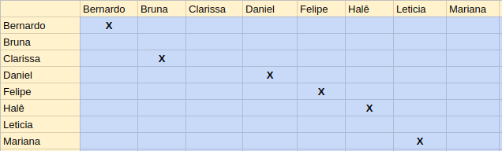

Sprint 1
Número da Sprint: 1
Data de Início: 09/06/2017
Data de Término: 16/06/2017
Duração: Sete Dias (Uma Semana)
1. Pareamento

1. Planejamento das Histórias
Para esta sprint foram constatadas dependencias entre as Issues, mas da mesma foram todas puderam ser completadas sem maiores problemas. Como foi realizada apenas uma sprint, todas as Issues foram concluídas nesta.
Foi realizada também uma Issue técnica, a qual modifica o projeto para que seja compatível com python 3.
2. Issues
I01 - Retornar JSON com métodos executados
Descrição: Ao executar o script, o mesmo deve criar um arquivo json contendo todos os métodos executados durante a execução dos cenários das features, da seguinte forma:
{ "features": [
{
"nome_arquivo": "path + nome do arquivo",
"funcionalidade": "Nome da Funcionalidade",
"cenario": "Nome do Cenario",
"metodos_executados": [
{ "nome": "classe+nomeMetodo", "numero_execucoes": "3"},
{ "nome": "classe+nomeMetodo", "numero_execucoes": "2"},
{ "nome": "classe+nomeMetodo", "numero_execucoes": "1"}
]
},
{
"nome_arquivo": "path + nome do arquivo2",
"funcionalidade": "Nome da Funcionalidade2",
"cenario": "Nome do Cenario",
"metodos_executados": [
{ "nome": "classe+nomeMetodo", "numero_execucoes": "1"},
{ "nome": "classe+nomeMetodo", "numero_execucoes": "2"},
{ "nome": "classe+nomeMetodo", "numero_execucoes": "3"}
]
}
]
}
Responsáveis: Bernardo Henrique.
I04 - Executar cenários separadamente em cada .feature
Descrição: Dado um arquivo .feature escolhido pelo usuário, o script deve identificar os cenários presentes dentro do arquivo .feature (basta buscar a palavra-chave "Cenário:", ou "Delineação do Cenário") e executar cada cenário individualmente, registrando os métodos executados por cada cenário. Como resultado pode-se utilizar o Json especificado na #3 .
Para executar apenas um cenário que começa na linha 7, por exemplo, pode-se utilizar o seguinte comando:
cucumber features/nome_arquivo.feature:7
Assim, apenas o cenário que se inicia na linha 7 será executado, registre todos os métodos executados durante este cenário e pronto.
Responsáveis: Mariana Pícolo e Letícias Dias.
I06 - Verificar os requisitos necessários para um projeto Ruby
Descrição:
- Verificar se é um projeto Rails
- Verificar se possui a gem SimpleCov
- Verificar se a gem está instanciada corretamente
Responsáveis: Halê Valente.
I07 - Incluir requisitos faltantes
Descrição:
- Incluir a gem no Gemfile
- Executar o bundle install
- Instanciar a gem no arquivo env.rb
Responsáveis: Daniel Teles.
I09 - Identificar definição de métodos e classes em um arquivo
Descrição:
Recebe um número e o nome do arquivo. Dentro desse arquivo, na linha de número indicado, verificar se é definição de método ou classe. Se sim, retornar seu nome. Se não, retornar None.
Retornar apenas se alguma linha dentro do método ou classe estiver sendo executada.
Responsáveis: Felipe Hargreaves.
I10 - Criar interface com o usuário
Descrição: Definir os comandos a serem utilizados pelo usuário para utilizar a biblioteca. Por exemplo:
trace_feature --file
trace_feature --file --scenario <nome/linha do cenário>
Responsáveis: Clarissa Lima e Bruna Pinos.
3. Histórias Técnicas
I08 - Modificar para python 3
Descrição: Modificação do projeto para que seja compatível com python 3.
Responsáveis: Time de Desenvolvimento.
4. Fechamento da Sprint
| Histórias Planejadas | Status |
|---|---|
| I04: Executar cenários separadamente em cada .feature | Completo |
| I06: Verificar os requisitos necessários para um projeto Ruby | Completo |
| I07: Incluir requisitos faltantes | Completo |
| I09: Identificar definição de métodos e classes em um arquivo | Completo |
| I10: Criar interface com o usuário | Completo |
| Histórias Técnicas | Status |
|---|---|
| I08: Modificar para python 3 | Completo |
5. Análise da Sprint
A Sprint foi foi totalmente realizada, tanto as issues técnicas quanto as planejadas foram executadas.